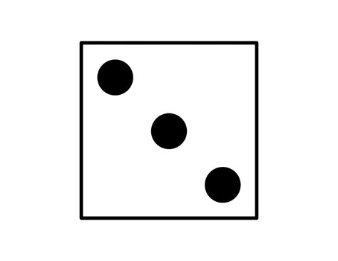
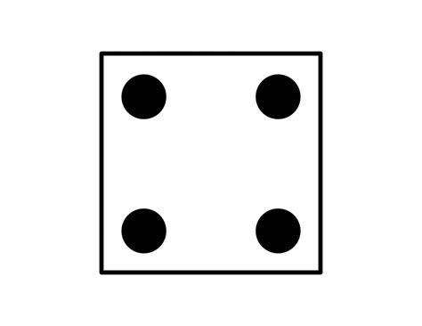
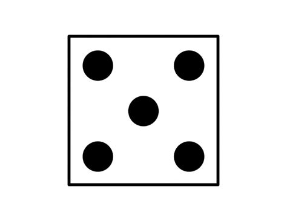
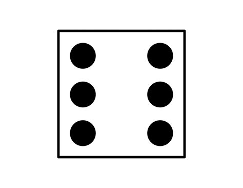
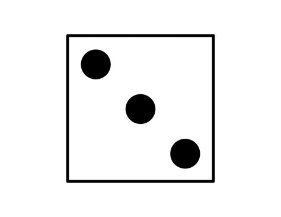
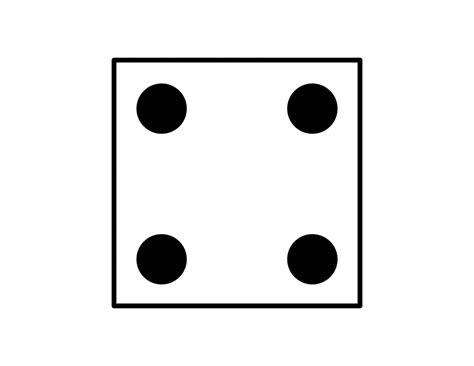
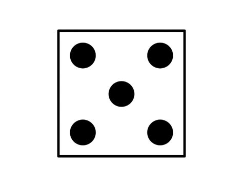
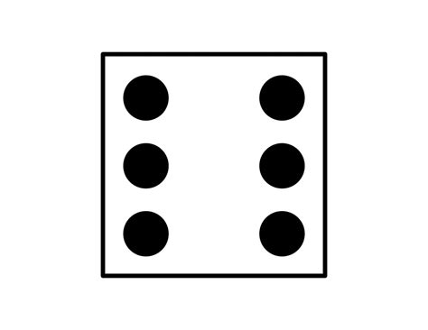

Web Dice Roller




Web Dice Roller
Welcome to Dice Roller!
Have you ever lost your dice for that one game that you really wanted to play? Well, I have the
solution for you!
Behold:
THE DICE ROLLER
This website, upon opening, automatically rolls a six-sided die.
The option to reroll the die will be there in the form of a button.